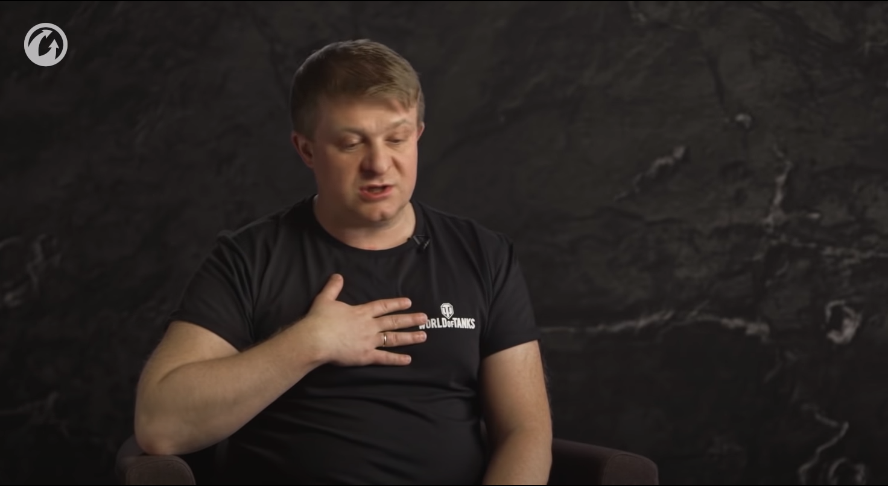

Written by Akezhan Rakishev Blog Entry 4
This blog post would present the analysis of the digital narrative story of my groupmate Jayna with whom we are taking the Writing for Digital Media course. I am going to review the design choices, narrative content, plot and give some
advice on video editing.
Since the narrative content is describing the plot and defines the flow of the story, I am going to analyze how well do the scenes convey the message to the audience. At the same time, I will also review the design choices and principles
that Jayna is using for each scene and how well do they contribute to the excitement of the story. Finally, I will do my best to provide my groupmate with qualitative advice on video and audio editing.
The main topic of the digital narrative is gratitude. Throughout that story, Jayna shares her experience when entering the Nazarbayev University. In this story, she wants to express gratitude towards her friends.
Before the narration, Jayna decides to provide some background information about herself and express the appreciation to close people.
The setting of the first scene is quite appealing because the author wants to start the narration in a cozy atmosphere. This storytelling technique is powerful because this is a great environment to describe yourself and share your experiences with the audience. For the setting, I would recommend setting the scene in a similar manner as the creators of the online game "Tanks". In Figure 1, the game creators of "Tanks" shares their story of game development, and they were very successful in sharing the experiences and feelings with the audience.
Figure 1. The game creators of "Tanks" shares their experiences through that scene
The narrative script has very concise language, but I would recommend cutting the final words "So, let's get started!" as it distracts from the idea of gratitude you are mentioning before. Instead of that, let people know that you are starting your story by using visual effects. For instance, the screen slowly darkens and a new scene appears.
The main protagonist, Jayna, received a grant to study at Nazarbayev University. Even though she was happy for the admission at the university, it was difficult for her to move to Nur-Sultan city in terms of social life and friends as
she was an international student from Uzbekistan.
The exposition is very clear and concise. Besides adding the picture of the official letter from the university, I would also recommend adding a photo with suitcase suggesting that you are leaving your hometown and close friends and preparing
for your academic journey. By doing that, you would make the smooth transition between illustrating the official letter and showing the university and other students. Figure 2 is a clear illustration of that idea.
Figure 2. The protagonist saying goodbye to close people
The protagonist feels alone while studying at the university. She observes how other students spend their time with friends and communities. The only people she can talk to is her family using video calls.
This part of the digital narrative shows the photos and images of students and groups. This scene should be very emotional as it describes the main conflict of the story. Jayna takes an advantage of background music "Futile Devices by Sufjan Stevens" that adds sad tone to the narrative and make the audience empathize the protagonist. At this point, my recommendation would be to avoid the bright colors on the film, make the scenes look a little bit darker.
After the two months of loneliness, Jayna finally finds a new friend and close person - Kamila and eventually feels joy, happiness and gain confidence.
These scenes show photos of their friendship, how they studied together and had fun. What I would highly recommend is to make the photos moving in the film to make them feel alive and interactive. For example, you could zoom in or zoom out while showing the pictures as shown in this video (0:00-0:07 and 3:26-3:46). This visual effect would add some significance and pathos to the digital narrative.
Jayna acquaints with new friends thanks to the relationships with Kamila and finds the best roommate.
During that action, the author wants to show photos of the main character who enjoys a great time with Kamila and new friends. This part also plays the music "Futile Devices by Sufjan Stevens" as the previous scenes to strengthen the
emotional appeal on the audience. The protagonist coming back to life again and progressively feels better and better.
Jayna thanks her best friend Kamila for her support and love.
In these last scenes, Jayna shares the photos of Kamila while telling the speech. I think this is a great way to finish the digital narrative since the audience finally would share her love and happiness. The author establishes a great contrast between the exposition and resolution of the story. In the beginning, the main character does not feel confident about her academic journey, and feels alone in the university, whereas she starts to feel enthusiasm and happiness in the resolution.
In general, Jayna created a wondrous digital narrative that would touch the emotions of people. She wrote a great scenario and skillfully revealed the topic "Gratitude" with her work. I sincerely believe that my advice and analysis
would be helpful to improve her work.